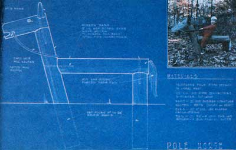

Plant An Animal
Building various animal shaped playground sculptures for children.
September/October 1980
Issue # 65 - September/October 1980
By Paul Hogan
Now that the youngsters are going back to school, it might be time to get together with other area parents and spruce up the local learning center's playground . . . with some imaginative and useful animal sculptures.
Over the past few years, I've built about 100 such recreational creatures. At first my creations were all horses, but lately I've begun constructing every manner of strange beast, both real and imagined. My latest project involved building a replica of the Loch Ness monster at the Devon (Pennsylvania) Elementary School. During that job, many of the local children and parents joined in .. . forming a build-aplayground-in-one-day party that rivaled-in spirit, at least-the old-time barn raisings.
THE ANATOMY OF A HORSE
It's best to start out building a simple horse, and then work your way up to constructing a giraffe, an alligator, a sea serpent, or whatever beast suits your fancy. To make a playground dobbin, you'll need a chain saw (and the skill to use it well and safely), along with a few basic garden tools . . . such as a shovel, a posthole digger, and perhaps a six-footlong digging bar. A heavy-duty electric drill can come in handy for the project, too, but I've successfully built a lot of animals without one.
You'll also need some short sections of utility pole. These are generally easy to come by, because most scroungers want full 20-foot lengths . .. so, while electric companies are often fresh out of the big ones, the firms always seem to have a pile of smaller pieces just waiting to be hauled away. (Be sure, though, that this recycled wood isn't supersaturated with creosote, as that tarlike preservative can irritate children's skin ... to say nothing of the damage it'll do to their clothes!)
Obtain four pole pieces, 8 to 10 inches in diameter. Two of these should be about 4 feet long (to form the back leg and the body) . . . a third needs to be a foot or so longer (it will become a combination foreleg and neck), and the fourth (the animal's head) should be about 18 inches in length.
My horses, as you can see from the photos, usually have only a single pair of legs: one limb up front and one in the rear. I've found the beasts to be easier to construct and stronger when they rest on just two supports, but if you want to add a few more uprights, that's OK, too. (You might very well wind up being the first person on your block with a six-legged horse!)
To begin construction, dig a straight hole to accommodate the rear leg and an angled hole-about 15° off the vertical (see the accompanying diagram)-for the foreleg. Then "plant" the two limbs firmly in place.
Now, fire up the chain saw (be sure to wear good earmuffs and safety glasses), and cut whatever kind of notches-at each end of the horse's "body" and on the neck/foreleg-are necessary to allow the back to rest on the two supports in a snug manner. Next, cut a couple of sections of 1/2" reinforcing rods at an angle, so that they look like oversized spikes. (You might even saw a double-edged point onto one end of each rod.) Then just pound the "nails" into the horse's neck and rear end to fasten the three wooden pieces together. (Assure any little onlookers that the "operation" won't hurt their future mount a bit!)
Next you're ready to attach the horse's head. You will, of course, have to have someone hold it in place while you drive in another homemade spike. (One advantage in using reinforcing rods instead of regular nails or bolts is that the ribbing on the rods' sides helps to keep the components from slipping after a few years of hard riding.)
Then comes the tricky part . .. cutting the mouth, shaping the head and rear end, and trimming away any loose projections which might be in the way or look out of place. My first cut on the face removes a wedge to form the horse's mouth. After that, I slope the four sides of the head so that the whole visage narrows just as does that of a real animal. (I always run my saw at top speed when doing this fancy work, to reduce the chance of the tool's kicking back or bucking. Operating the instrument at high RPM also makes a smoother cut . . . which improves the appearance of the creation and makes it safer for the small fry who'll use it.)
As the horse starts to come to life, it'll usually "demand" such basic options as a tail, ears, eyes, mane, and-if its back is covered with too much creosote-a saddle. To fashion ears, I simply cut up the sidewalls of an old tire and nail them in place ... eyes are made from reflective highway-marker disks ... and the mane and tail consist of manila or nylon rope. To affix these last bits of finery, I secure the rope ends in place with "U"-nails or large staples and then unbraid the cord, so that its fibers form a flowing mass of horse hair.
The saddle is made from an old conveyor belt or floor matting. (It's very important to guard against creosote burns, so saddle the critter be/ore you let anyone ride it.) I also install a bridle in the horse's mouth . . . shave down its rough edges with a Stanley "Sureform" ... and then let 'em ride!
The animal shown in the diagram has just gone to that great horse farm in the sky after 20 years at our local nursery school ... so that's probably about the average life expectancy of a well-used wooden steed.
OTHER CREATURES
After you've proved yourself to be an animal sculptor, it's time to go on to bigger and better things . . . such as a giraffe, which is little more than a horse with a long neck and-perhaps-a paint job!
An alligator, on the other hand, is just a horse with a long tail, no neck, and short legs that keep it very low to the ground. Cut a big notch for the open mouth and a tire section for a tongue. Use a cut-apart tractor tire for the entire back of the alligator, and-after the rubber strip passes the end of the reptile's body-taper it to a long point so the children can really grab the 'gator by the tail and give him a lesson he won't soon forget!
Once you've acquired some experience by building a few different animals, you'll be ready to construct a full-scale monster, and-while you're at it-you can even hang a swing from its jaw! Such a large beast, however, is not a backyard project. In fact, when I construct the behemoths at elementary schools, I need the help of a dozen or so strong men.
The dragon, too, is based upon the horse design, but the pole that makes up the body and tail should be at least 20 feet long, and the giant serpent must have all of its legs plus the rear end of its body embedded in the ground. Remember, this is really a cantilevered creature . . . you have to anchor it well, or the whole thing might tip over with a load of children.
It's best to borrow a backhoe from the township or school to do the necessary digging (sinking this creature's supports is beyond the realm of shovel and posthole-digger work!). Make a trench at least six feet deep and at an angle of about 45°. After you tip the butt end of the pole into the ditch, throw in some heavy boulders for counterweights. Then, as you refill the hole, be sure to use a tamper to pack down each six-inch layer of backfill. (This process helps anchor the butt in place.)
While supporting the "head" end of the long pole (either with the bucket of the backhoe or some props of your own design), sink the front and hind legs in their proper positions, and spike the monster together. I like to dress up each big brute with a horribly scaly dorsal growth made from cut-up tires . . . and use the same recycled rubber material to create the head, tongue, feet, and tail. Porcelain insulators-scrounged from the utility company-serve as eyes.
Three minutes after finishing our first version of old "Nessie" (as the creature was promptly christened), half a dozen two-legged monsters climbed up its back and began scrapping on top of its head . . . 20 feet in the air! To put a stop to that perilous activity, I quickly ran to the neighborhood garden mart and bought a pot of the glue (called "Tanglefoot") which is used around trees to keep off bugs. Spread on the upper (dangerous) part of the monster's back, the adhesive worked like a charm: Youngsters will-it seems-go through barbed wire, crawl under electric fences, and swim moats filled with piranhas ... but they sure won't mess with tree-goo!
A GOOD WAY TO TEACH
Making concrete animals can be as much fun as is building the wooden creatures. All that's required are some old lengths of 3/8" reinforcing rods, metal plasterer's lath, and baling wire (from which I construct the form) . . . and sand, cement, and lime (I use a very rich mixture of 2 parts sand, 1 part cement, and 1/2 part lime).
Three coats of concrete are troweled onto the metal substructure, and the critter is covered with a wet blanket to prevent it from curing too fast and cracking. When applying the final coat, I sift the to-be-mixed sand through an old window screen and smooth the concrete on with heavy rubber gloves. (This process produces a very smooth finish which won't chafe the children's skin.)
Sometimes, when designing a new playground, I conduct a school election in order to let the students choose their own mascot. Then I take the youngsters to the library to read about the animal they've selected. After that, we travel to the zoo and see the beast in the flesh. Finally, we get some concrete and mix it all up ourselves . . . and then-attired in surgeon's plastic gloves-all the children (even four-year-olds) get a chance to help shape their special creature. (Of course, the finished animal is of secondary value, in these instances, to the experience of a democratic election . . . and the exposure to library science, zoology, sculpture, cement work, and community effort that the youthful designer/builders gain during the course of such a project.)
There are hundreds of versions of playground animals that can be made from old poles, tires, concrete, or whatever. Most don't require a great degree of skill ... just a fertile imagination. Your child already has that, so-if you need any help-just ask him or her for some ideas!
For example, when I'd almost finished my first cement sculpture-a dinosaur-my four-year-old son asked where the animal's eyes were. When I told him that my concrete beasts didn't need eyes, the boy ran upstairs . . . returned with two of his marbles ... stuck them in the proper place . . . and said, somewhat smugly, "Well, now he has them anyway!"
EDITOR'S NOTE: For more of Mr. Hogan's innovative, do-it-yourself recycling ideas, see "Build an In-Tire Playground!" (MOTHER NO. 58, page 24). This back issue is available for $3.00-plus $1.00 shipping and handling-from THE Mother Earth News(restricted), P.O. Box 70, Hendersonville, North Carolina 28791.
 This basic wooden-pole, two-legged horse lasted 20 years in a children's nursery... A half-scale prehistoric creature made out of cement... Youngsters in the Devon (Pennsylvania) Elementary School love their Loch Ness Monster Swing. |
 A diagram for (inset) a backyard mount |
|